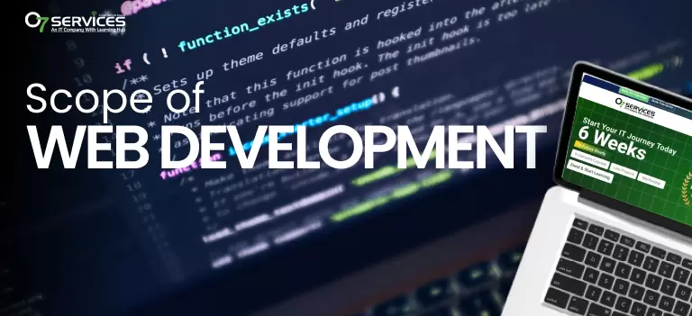

Best IT Company in Jalandhar, Punjab India
We develop beautifully designed custom software, created to work exactly the way you need it to. Your business is unique, so we create software to match, allowing staff to get their work done easier, faster and with fewer mistakes. |

|
Scope of Web Development
The scope of web development encompasses designing, building, and maintaining websites and web applications. With rapid digital transformation, its career scope remains vast and future-proof. Professionals can specialize in
Front-end: Creating visual interfaces and user experiences.
Back-end: Managing server architecture and data.
Full-stack: Handling end-to-end development.
Demand is driven by e-commerce, mobile applications, and evolving technologies like AI integration, offering extensive remote, freelance, and corporate opportunities worldwide.
|

|